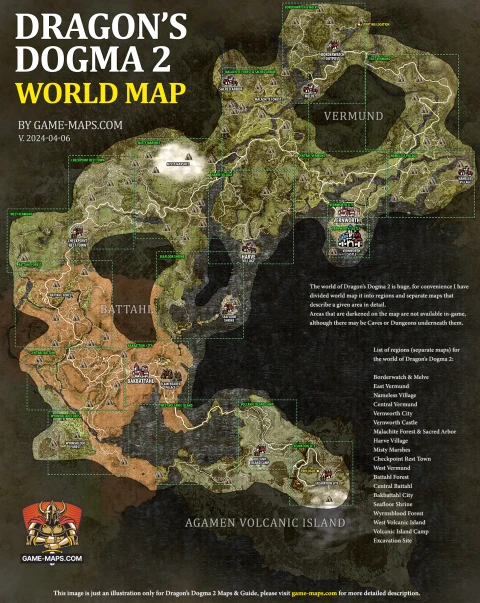

PS5 · spoiler aan · Teun Mode · Fighter start

Alles is doorzoekbaar. De app gebruikt offline opslag; jouw vinkjes blijven op je iPhone bewaard.
Klik in de kaart op een plek en vul daarna deze velden. Zo hoef jij geen coördinaten te kennen.